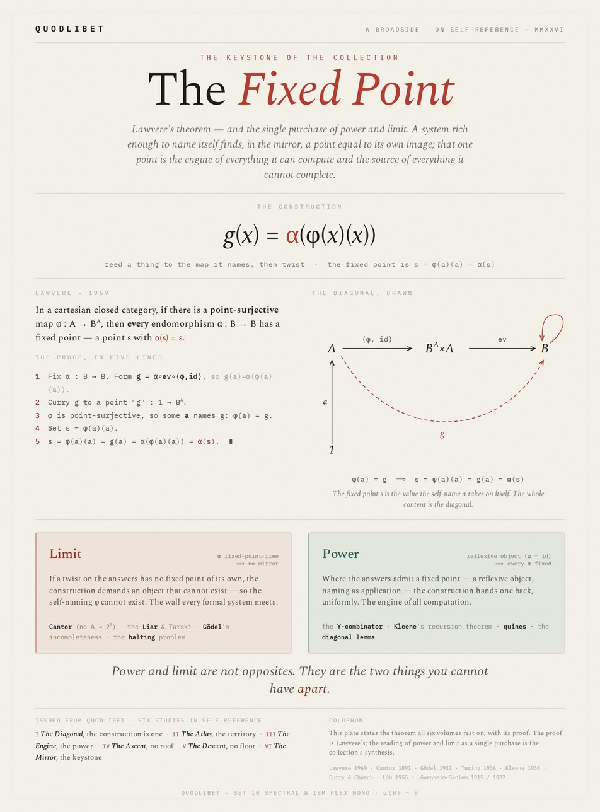

Collected broadside · six-study version
The Fixed Point
This collected broadside names six studies and adds The Engine to its colophon. The separately preserved original PDF names five studies and has a different layout. Both versions remain available.
The recovered collected file is a ZIP containing page images and OCR text, despite its historical .pdf filename. This reader displays the embedded images unchanged, with their OCR available below each page.
Page 1

OCR text · page 1
Q U O D L I B E T A B R O A D S I D E · O N S E L F - R E F E R E N C E · M M X X V I T H E K E Y S T O N E O F T H E C O L L E C T I O N The Fixed Point Lawvere's theorem — and the single purchase of power and limit. A system rich enough to name itself finds, in the mirror, a point equal to its own image; that one point is the engine of everything it can compute and the source of everything it cannot complete. T H E C O N S T R U C T I O N g(x) = α(φ(x)(x)) feed a thing to the map it names, then twist · the fixed point is s = φ(a)(a) = α(s) LAWVERE · 1969 In a cartesian closed category, if there is a point-surjective map φ : A → Bᴬ, then every endomorphism α : B → B has a fixed point — a point s with α(s) = s. THE PROOF, IN FIVE LINES 1 Fix α : B → B. Form g = α∘ev∘⟨φ,id⟩, so g(a) = α(φ(a)(a)). 2 Curry g to a point ⌜g⌝ : 1 → Bᴬ. 3 φ is point-surjective, so some a names g: φ(a) = g. 4 Set s = φ(a)(a). 5 s = φ(a)(a) = g(a) = α(φ(a)(a)) = α(s). ∎ THE DIAGONAL, DRAWN A B A ×A B ⟨φ, id⟩ ev α g 1 a φ(a) = g ⟹ s = φ(a)(a) = g(a) = α(s) The fixed point s is the value the self-name a takes on itself. The whole content is the diagonal. Limit α fixed-point-free ⟹ no mirror If a twist on the answers has no fixed point of its own, the construction demands an object that cannot exist — so the self-naming φ cannot exist. The wall every formal system meets. Cantor (no A ↠ 2ᴬ) · the Liar & Tarski · Gödel's incompleteness · the halting problem Power reflexive object (φ = id) ⟹ every α fixed Where the answers admit a fixed point — a reflexive object, naming as application — the construction hands one back, uniformly. The engine of all computation. the Y-combinator · Kleene's recursion theorem · quines · the diagonal lemma Power and limit are not opposites. They are the two things you cannot have apart. ISSUED FROM QUODLIBET — SIX STUDIES IN SELF-REFERENCE I The Diagonal, the construction is one · II The Atlas, the territory · III The Engine, the power · IV The Ascent, no roof · V The Descent, no floor · VI The Mirror, the keystone COLOPHON This plate states the theorem all six volumes rest on, with its proof. The proof is Lawvere's; the reading of power and limit as a single purchase is the collection's synthesis. Lawvere 1969 · Cantor 1891 · Gödel 1931 · Turing 1936 · Kleene 1938 · Curry & Church · Löb 1955 · Löwenheim–Skolem 1915 / 1922 Q U O D L I B E T · S E T I N S P E C T R A L & I B M P L E X M O N O · Α ( B ) = BDownload the unchanged OCR text